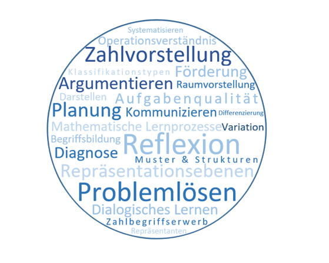

Gymnasium am Rittersberg
Ludwigstraße 20, 67657 Kaiserslautern
Ludwigstraße 20, 67657 Kaiserslautern

Mathematik war ursprünglisch eine Wissenschaft kombiniert aus der Untersuchung Geometrischer Formen und
dem Rechnen mit Zahlen. Mittlerweile gehören noch einige andere Teilbereiche dazu, welche in der Schule aber kaum bis garnicht erwähnt werden, sollte man
keinen Leistungskurs wählen.
Mathematik wird in der Schullaufbahn schon in der Grundschule unterrichtet. Es wird zwar immer schwieriger, aber auch interessanter.
Auserdem Begleitet die Mathematik und sowie im Alltag, als auch in anderen Schulfächern. Sie ist in vielen Berufen Pflicht und hilft meistens auch in anderen Berufen.
Einige Beispiele dazu sind hier aufgelistet:
In der Informatik ist jede Darstellung mit Zahlen zu erklären.
Dabei wird also vom Computer mit der Mathematik aus Zahlen eine Darstellung errechnet.
Aber auch beim Programmieren hilft die Mathematik, wenn beispielsweise Logik im Code
oder auch einfach nur eine benötigte Rechnung im Programm benutzt werden muss.
In der Physik spielt die Mathematik eine wichtige Rolle.
Ob bei Experimenten oder bei Theorien von berühmten Wissenschaftlern,
es ist fast immer eine Mathematische Formel im Spiel.
Auch beim Einkaufen hilft die Mathematik in gewissen Maßen.
Meisten geben Geschäfte Rabatte in Prozenten an oder mehrere kleine Packungen sind von der
Menge her günstiger als eine Große. Das ganze scheint wenig auszumachen, aber hat oft einen
großen Preisunterschied oder zeigt das BIO Produkte auch günstig sind.